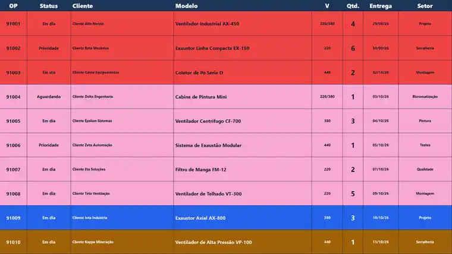
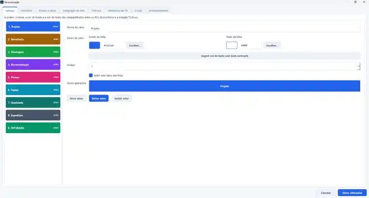

Context and problem
Orders and priorities needed a clear operational view without relying on scattered documents and constant manual checking.
CASE / PRODUCAO-OPERACIONAL
IN PRODUCTIONDeployed internal product
Windows application for production-order management in the office and collective TV/Focus monitoring on the factory floor.

VISUAL EVIDENCE


What this gallery shows
The selection prioritizes real screens, sanitized copies or declared technical flows, always with context indicated in the caption.
Public limit
Operational data, credentials, private integrations and client information are not part of this publication.
Orders and priorities needed a clear operational view without relying on scattered documents and constant manual checking.
Product, interface, rules, document import, database, cache, Windows installation, scheduled integration and support.
PySide6, configurable central SQLite, local cache, migrations, optional OCR and a scheduled task to discover only new production orders on a read-only NAS.
What this case does not show
The repository uses fictional production orders and contains no company database, paths or documents.
If the operation grew
I would evolve it toward corporate identity, a central transactional database, station telemetry, update events and multi-site deployment with observability.
Public evidence contains no credentials, personal data or sensitive internal information.